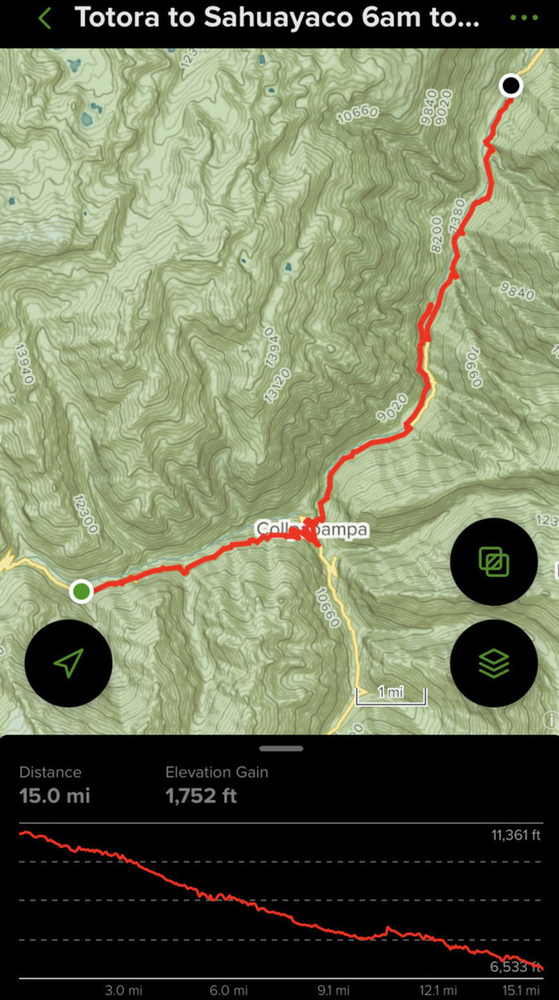
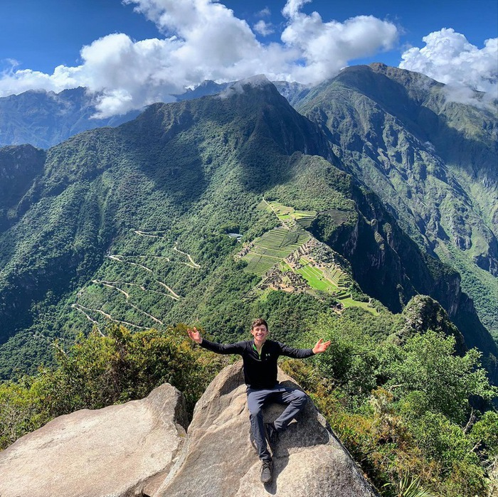

Check out the video below for some footage of the trip!
Started off in Cuzco picking up some provisions including cheese and bread for my dinners, with some snickers bars and gummies. In retrospect I had way too much sugary stuff, especially since I'm a sucker for savory stuff. I'm not sure what I was doing. Anyways this was my first view coming down into the valley starting at 4:20pm!
My first stretch of the trail! A lot of downhill and honeslty a pretty solid amount of vert. I was pretty pooped when I hit the Santa Rosa camp. There were some people there, but I was too tired to talk. I paid a couple dollars to setup camp. Got in my tent, ate some bread and cheese and called it a night.
My itinerary for DAY 2. Big vert day, but mostly exploring around the Choquequirao Ruins.
I made it to Choquequirao ruins around 10am on the second day and wow it was amazing.
The famous llamas in the rock!
I started to head off from the ruins around 3pm and saw these sick flowers. Unfortunately I ran out of water for a bit between here and the next river in about 5 miles. I banked on the river being there though and was rewarded. Thank the gods!
My itinerary for DAY 3.
After crossing the river I jumped over a mountain in the morning. Had lunch at a person's house for a couple dollars. Amazing food honestly! Then got on and saw this amazing view as I was climbing over the tallest mountain pass on the trek.
Unfortunately this night I got very sick and was not having a good time. However, I powered through shivers and diarrhea and headaches to wake up and get going in the morning. I tried to finish off the rest of my itinerary DAY 4
Long Story Short: Day 4 was a rough day. I kept an okay pace because it was mostly flat or downhill, but I had multiple moments where I felt like throwing up. I did get to cross a river using an awesome (slightly terrifying) bridge crossing contraption cage thing. But I made it!
I realized around 1/2pm that I just did not have it in me to finish. At that point I knew a small town with road access was coming up in 2 miles and those were honestly the longest miles of my life. I haggled with a small bus going to the Hydroeléctrica and was able to get cheaper fare than the tourists (Hell yeah). Then I got on another small van there and made it to Aguas Calientes where I just wandered around until I found the cheapest hostel possible. Which was actually super nice.
I still felt sick unfortunately and would be sick for the next 2 weeks, but I powered ahead and still hiked up to Machu Picchu the next day despite my headaches and stomache problems. Definitely worth it though!!!!!!!!!!

This last picture is on top of Huayna Picchu. Yes I did elect to climb another 400m once I already was at Machu Picchu. Yeah I did way too much gain over the course of this trip.... worth it
